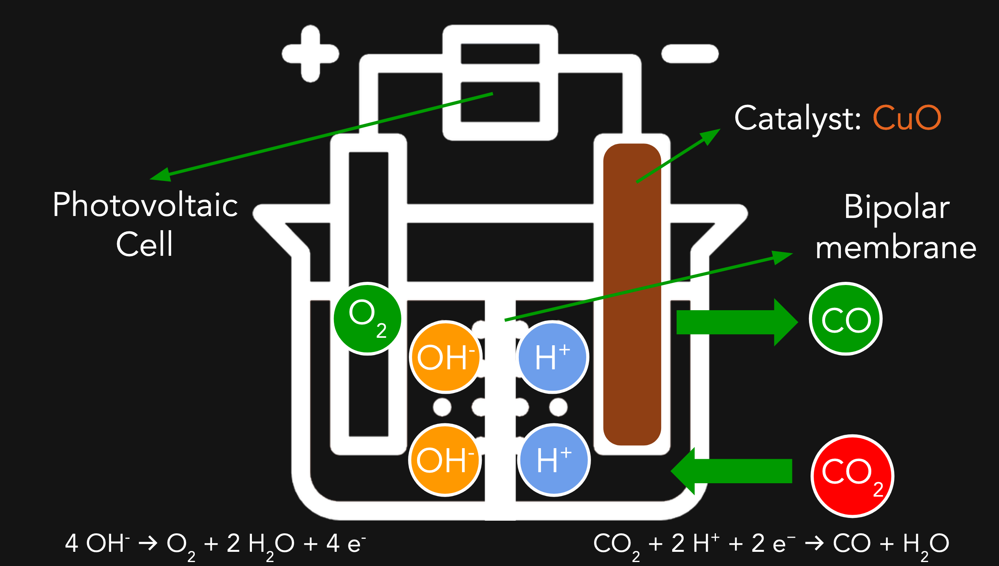
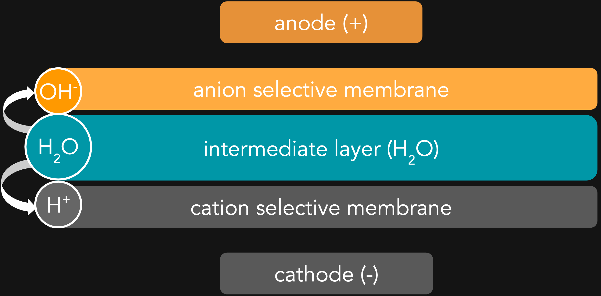

Reduction of carbon dioxide to carbon monoxide
| Features of electrolytic cell | Purpose |
|---|---|
| Converting carbon dioxide to carbon monoxide by copper (II) oxide catalyst | Carbon monoxide will then be reacted with hydrogen gas to form fuel. |
| Photovolatic cell used | Since electrolysis is energy intensive, electrolysis will use up a lot of energy. Though dry-cells can be used, the manufacturing and disposal of dry-cells will pollute the environment. Hence renewable energy is used to keep this method eco-friendly. |
Bipolar membrane
A quick look at the electrolysis setup shows a bipolar membrane being used. The bipolar membrane facilitates the dissociation of water molecules into hydrogen and hydroxide ions. The bipolar membrane consists of the anion selective membrane, the cation selective membrane and the junction/intermediate layer. The respective functions of the bipolar membrane is shown in the table below
| Part | Function |
|---|---|
| Anion selective membrane | Only allows hydroxide ions (OH-) to pass through the anion selective membrane to the anode |
| Cation selective membrane | Only allows hydrogen ions (H+) to pass through the cation selective membrane to the cathode |
| Intermediate/Junction layer | A region for the dissociation of water into hydrogen and hydroxide ions. The respective ions will then pass through the respective selective membranes. |
After conversion of CO2 to CO, CO can be converted to methanol (CH3OH) by the following equation:
Methanol can be used as an alternative source of fuel to gasoline and octane.